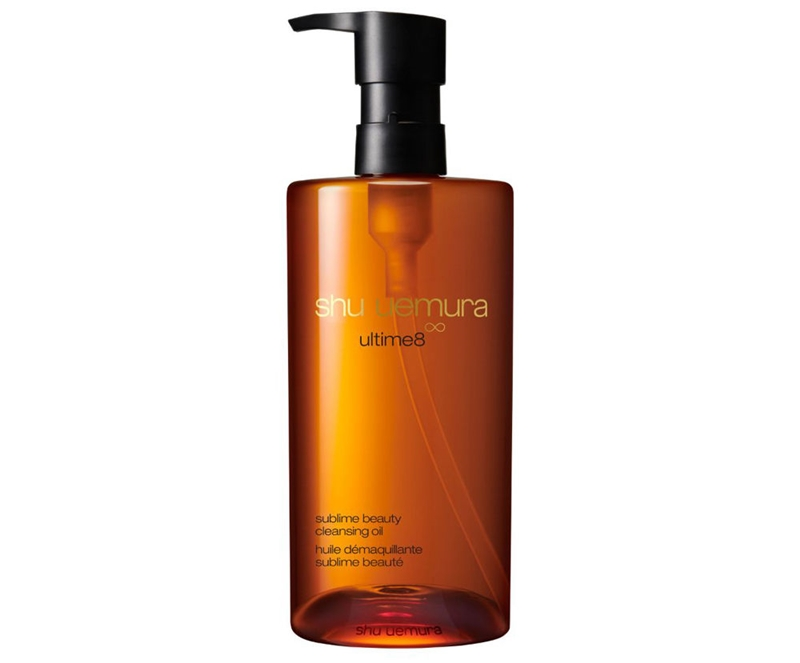
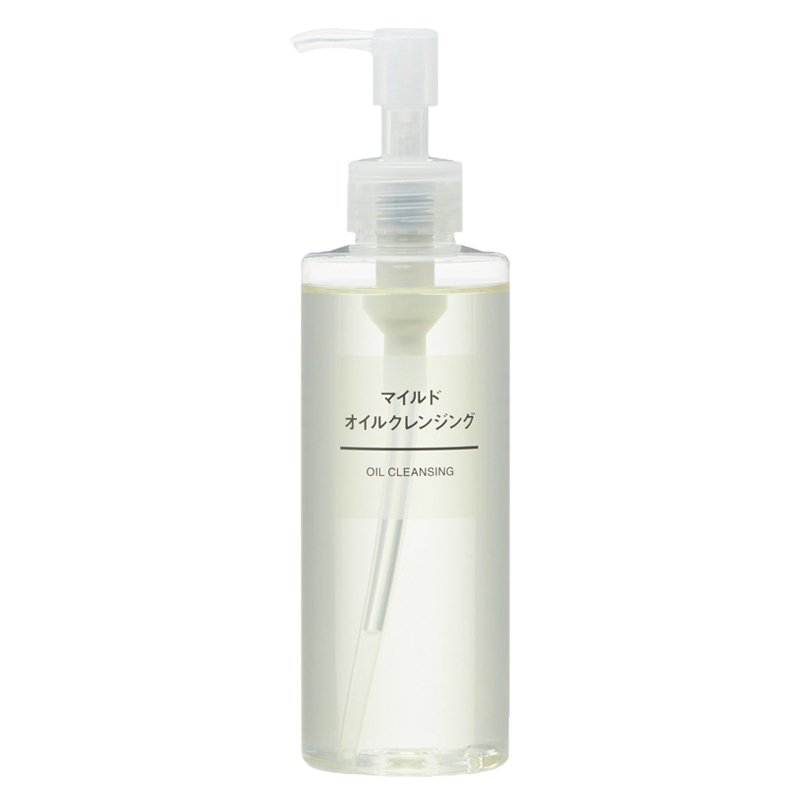
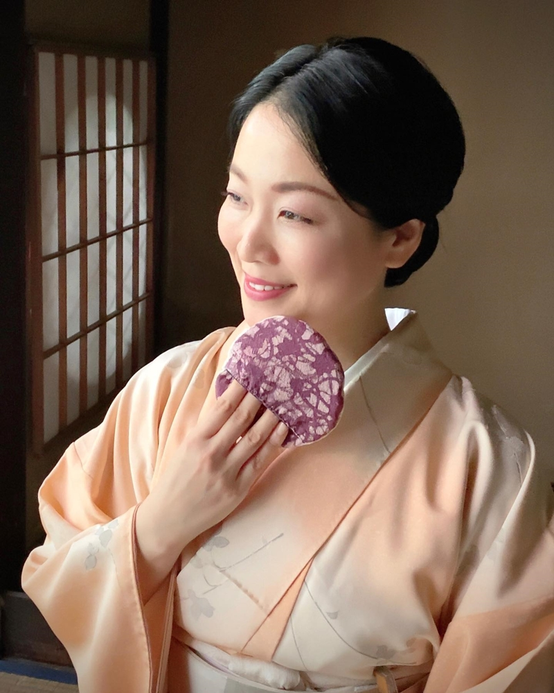
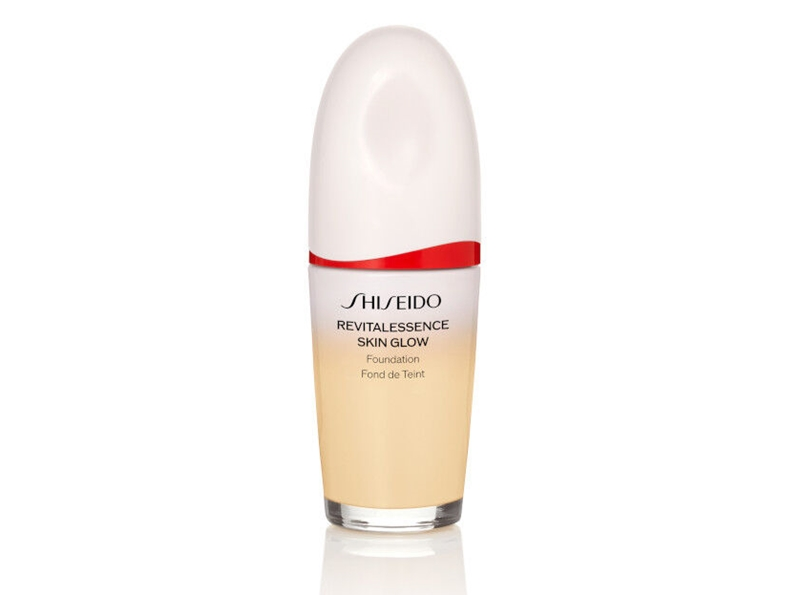
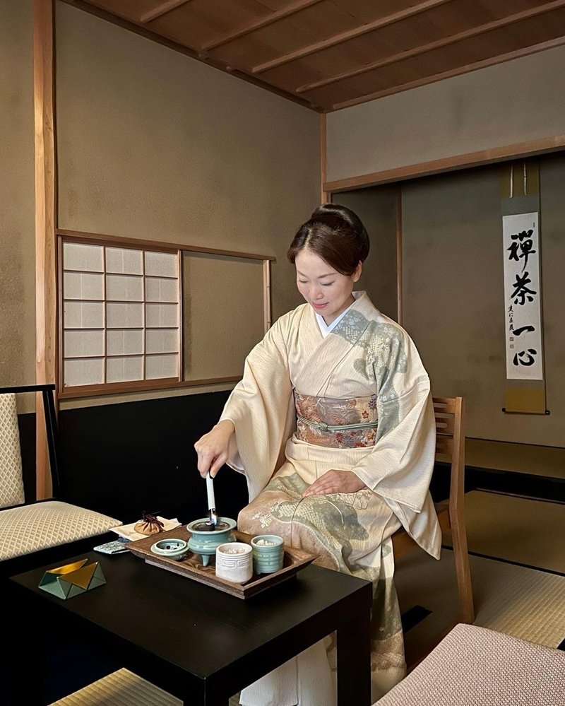
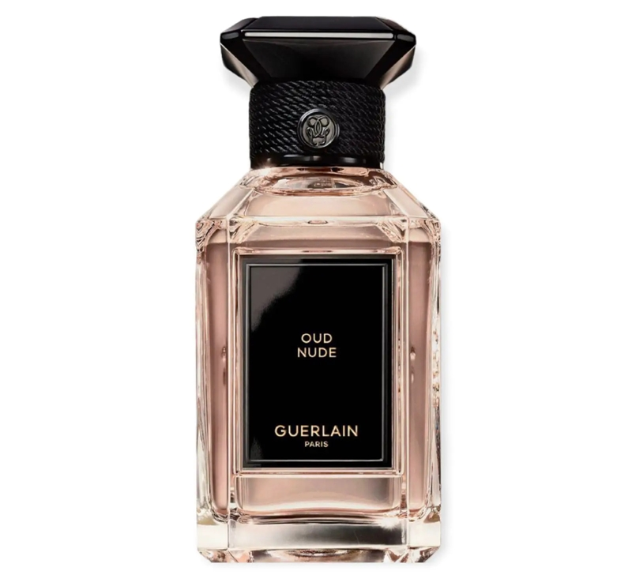
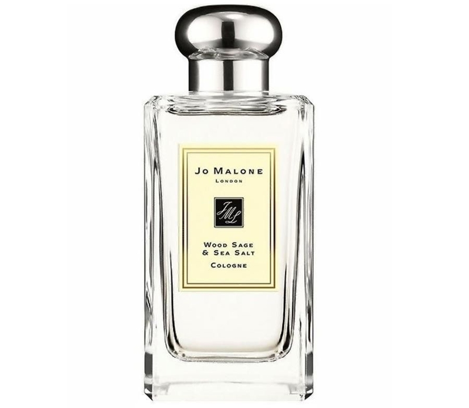
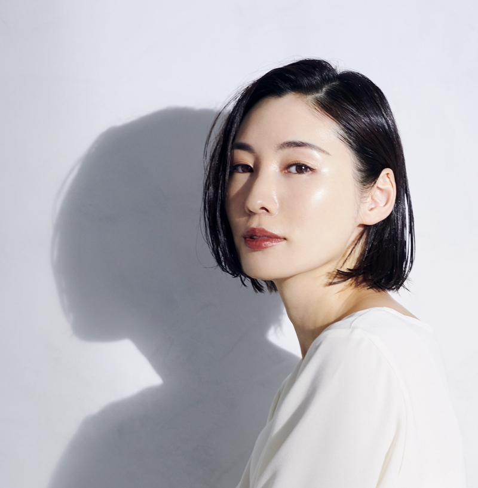

Tẩy trang bằng dầu Ở xứ mặt trời mọc, từ lâu, việc tẩy trang bằng dầu đã được coi là phương pháp hữu hiệu nhất để làm sạch da. Hầu như tất cả các thương hiệu mỹ phẩm Nhật Bản đều dành riêng một vị trí cho dầu tẩy trang trong các dòng sản phẩm của mình. Việc làm sạch nhẹ nhàng giúp lớp màng hydrolipidic và độ pH của da được bảo toàn. Do đó, dầu tẩy trang có nguồn gốc từ thực vật sẽ không làm da nhờn hơn hay làm tắc nghẽn lỗ chân lông là đồng minh của làn da khô và nhạy cảm. Nó cân bằng, điều tiết việc sản xuất bã nhờn và loại bỏ tạp chất, bụi bẩn mà không gây tổn hại cho hàng rào tự nhiên, giúp làn da căng mọng và mềm ẩm.
Dầu tẩy trang shu uemura Ultime8 Cleansing Oil được cải tiến mang đến khả năng làm sạch sâu vượt trội và tái tạo nuôi dưỡng làn da mạnh mẽ nhờ tinh chất hoa trà đỏ tsubaki quý hiếm
Dầu tẩy trang Muji Oil Cleansing được làm từ 100% dầu thực vật với thành phần chính là dầu oliu. Lớp dầu lỏng không màu không mùi hòa tàn lớp trang điểm và bụi bẩn nằm sâu bên trong lỗ chân lông nhưng vẫn giữ độ ẩm tự nhiên của da.
Nâng niu làn da như lụa làBậc thầy cắm hoa ikebana đồng thời là chuyên gia về kimono Junko Sophie Kakizaki đến từ một trong những gia đình lâu đời nhất Nhật Bản. Nếu chỉ nhìn thoáng qua, bạn sẽ không thể nào đoán được người phụ nữ này đã U50 nhờ làn da sáng mịn với độ bóng tự nhiên mà đáng ra sẽ chỉ hiện diện trên làn da của những cô gái đôi mươi.
Trên trang Instagram có 24 ngàn người theo dõi, cô Junko thường xuyên chia sẻ về những bí quyết dưỡng da và chăm sóc cơ thể rất đặc biệt đã được nhiều thế hệ phụ nữ trong gia đình cô áp dụng. Mỗi ngày, cô sử dụng xà phòng làm từ rượu sake để rửa mặt sau đó dùng miếng pad làm từ lụa giống như những bộ kimono để nhẹ nhàng lau đi lớp bọt và massage da. “Tơ lụa Nhật Bản mịn và mỏng. Từ các cô gái quý tộc sống cách đây hơn một nghìn năm trước đến các geisha xuất hiện đã hơn một trăm năm, ai cũng sử dụng vải lụa để duy trì làn da mịn màng và trong trẻo,” Junko nói.
Sau bước làm sạch, cô Junko tuần tự thực hiện các bước thoa tinh chất, kem dưỡng, dầu dưỡng và kem chống nắng nếu như là ban ngày. Các sản phẩm dưỡng da có kết cấu lỏng nhẹ, dễ thẩm thấu được lựa chọn với mục đích là mang lại cho da cảm giác khô thoáng, nhẹ tênh. Các loại kem nền có chỉ số SPF cũng sẽ được ưu tiên vì có thể thay thế cho bước kem chống nắng.
Kem dưỡng SKII Skinpower Advanced Cream sở hữu công thức chứa 3 thành phần chống lão hóa mạnh mẽ để cải thiện làn da săn chắc và tươi trẻ: thành phần lên men tự nhiên được tìm thấy trong quá trình ủ rượu Sake PITERA™, chiết xuất sinh học Kinren và chiết xuất rễ cây mẫu đơn trắng
Kem nền Shiseido Revitalessence Skin Glow có độ che phủ trung bình sẽ tôn vinh vẻ đẹp tự nhiên của làn da. Công thức chứa chiết xuất men Kefir+, niacinamide và prebiotics giúp nuôi dưỡng hàng rào da khỏe mạnh. Sản phẩm có chỉ số chống nắng SPF 30 PA+++.
Thực hành hương đạoViệc làm đẹp gắn liền với năm giác quan. Ngửi mùi thơm êm ái, thanh khiết có tác dụng giúp thư giãn đầu óc và làm giảm lượng cortisol – hormone sinh ra do căng thẳng – có khả năng làm tăng tình trạng viêm do mụn và khiến làn da hình thành nếp nhăn sớm. Kōdō là nghệ thuật hương đạo của người Nhật. Hương đạo không chỉ đơn thuần là thưởng thức mùi hương mà quan trọng nhất chính là “nghe hương” bằng cả tâm hồn, thả hồn mình vào trong làn hương thơm thanh tao. Thực hành ngửi hương là phương pháp được chuyên gia ikebana Junko Sophie Kakizaki áp dụng như một hình thức thiền định và dung dưỡng làn da.
Nghệ thuật Kōdō khá phức tạp và đòi hỏi người thực hành nó phải có sự hiểu biết về truyền thống Nhật Bản. Tuy nhiên, bạn hoàn toàn có thể vận dụng nguyên lý hương thơm để nâng cấp trải nghiệm làm đẹp và dưỡng da của mình, thông qua việc sử dụng tinh dầu thơm hay đơn giản như việc xịt nước hoa hàng ngày. Trầm hương là nguyên liệu được sử dụng chính trong nghi thức Kōdō. Nốt trầm thanh tao, trầm ấm cũng được nhiều nhà hương ứng dụng trong những sản phẩm nước hoa của mình.
Nước hoa Guerlain L’Art et la Matière Oud Nude với nốt trầm được đặt bên cạnh những nốt gỗ sáng tươi làm bừng lên sự rạng rỡ dịu dàng trên da thịt
Nước hoa Jo Malone London Wood Sage & Sea Salt Cologne có nốt hương chủ đạo là muối biển, cây xô thơm gợi lên cảm giác sảng khoái, tự do như được hòa mình vào thiên nhiên
Tăng cường trao đổi chấtTrao đổi chất là phản ứng hóa học biến đổi protein và chất béo thành axit amin và carbohydrate thành đường sau đó chuyển hóa thành nguồn năng lượng để hoạt động. Nói cách khác, trao đổi chất là cách bạn đốt cháy lượng calo mỗi ngày. Vì vậy, tốc độ trao đổi chất của cơ thể càng nhanh, quá trình giảm cân, trẻ lâu vì nó quyết định cách chúng ta sản xuất và đốt cháy năng lượng từ chế độ ăn uống.
Sonmi, nữ người mẫu nổi tiếng người Nhật kiêm người sáng lập thương hiệu làm đẹp Meeth, tiết lộ trong một cuộc phỏng vấn với tạp chí Vogue France một mẹo đơn giản của người Nhật để duy trì quá trình trao đổi chất nhanh chóng. “Phụ nữ Nhật Bản luôn cố gắng không làm mát cơ thể. Ngay cả khi trời rất nóng, tôi cũng không uống đồ uống có đá. Nếu nhiệt độ cơ thể giảm sẽ quá trình trao đổi chất và quá trình tái tạo tế bào chậm lại,” Sonmi nói.
Để tăng cường trao đổi chất, phụ nữ Nhật Bản cũng áp dụng phương pháp xoa bóp da đầu, đi bộ và tắm nước nóng mỗi ngày. Dẫn lưu hệ bạch huyết bằng cách massage với các loại đá gua sha cũng là cách có thể kích thích tăng cường giải độc và trao đổi chất. Ngoài ra, uống một tách trà matcha nóng sau mỗi bữa ăn cũng là thói quen giúp làm ấm cơ thể. Trong trà matcha chứa nồng độ catechin cao. Catechin là một loại chất chống oxy hóa giúp tăng cường trao đổi chất và thúc đẩy quá trình oxy hóa chất béo, giảm sự tích tụ mỡ trong cơ thể.
Tác giả: phuong ha
BÀI VIẾT LIÊN QUAN
Shiseido Vital Perfection: Potential Has No Age
Như những tiểu thư Chanel, hãy cuốn lấy mọi ánh nhìn bằng lối trang điểm tối giản mà sang trọng
Khắc phục làn da lão hóa nhờ tinh túy từ những nụ hồng Granville
5 bí quyết giữ lọn tóc xoăn bồng bềnh qua đêm
GlassKin, SkinCyling, YogaFace cùng loạt từ khóa làm đẹp bùng nổ nhất hiện nay
BÀI VIẾT NỔI BẬT
Bí quyết chăm sóc sức khỏe và rèn luyện thể thao cho phái đẹp
“Bà hoàng trang bìa” tạp chí Đẹp gọi tên siêu mẫu Thanh Hằng
Bộ ảnh bìa của siêu mẫu Thanh Hằng “đắt giá” đến thế nào?
Khai trương salon đầu tiên của ZENITH tại The Hour Glass Union Square, TP. Hồ Chí Minh
BBST Parfois Thu Đông 2023: Đắm chìm vào vũ trụ điện ảnh thời trang đa chiều
Hâm nóng tình cảm với 13 gợi ý hẹn hò lãng mạn cho mùa thu